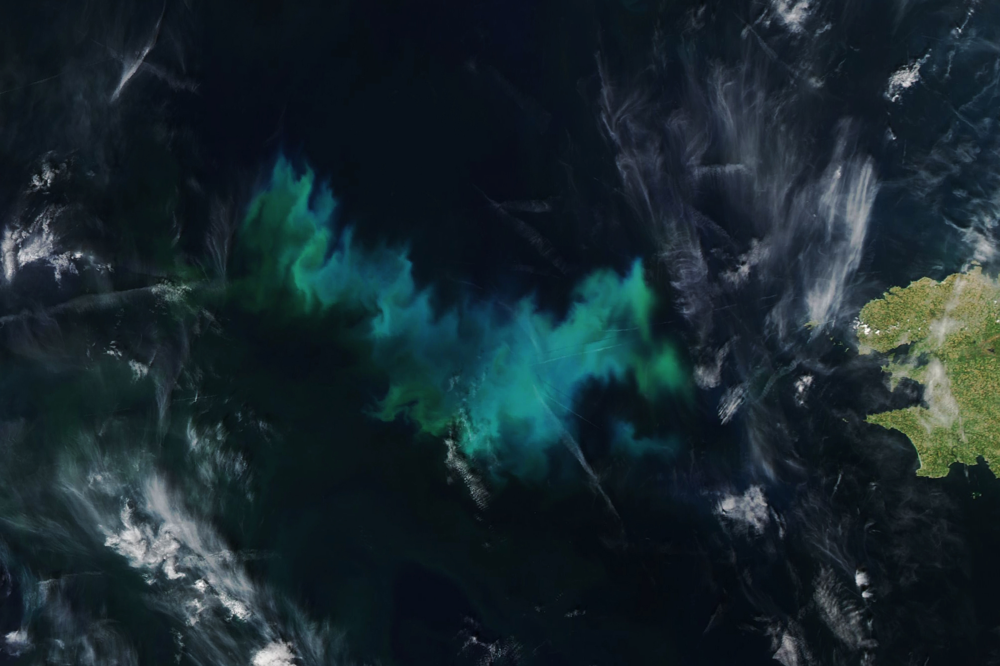
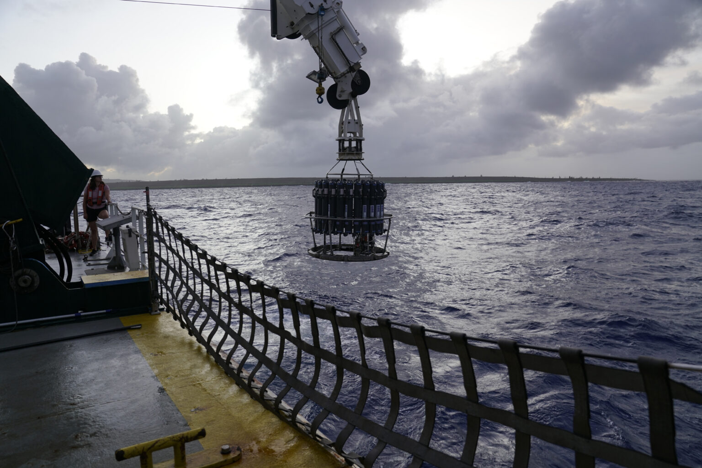

Random
Every cell has an equal chance
We cannot measure everywhere. With the same number of observations, how much does where we look change what we know?
01 · Introduction

Machine learning turns sparse measurements into complete maps of ocean CO₂. If the measurements are clustered, do the maps get worse — and where should the next ones go?
02 · Background
Each dot is a 1° cell with real surface-water fCO₂ measurements (SOCAT v2025). Drag the globe and switch year or month to see the gaps.
Drag to rotate · pinch or Ctrl + scroll to zoom
—

03 · Method
The real ocean has no complete answer. So we use an Earth-system-model ocean as truth, hide part of it, and test how well each sampling rule recovers it.
Main comparison: south of 60°N · connected ocean · area-weighted · 2005, 2010, 2014 · 20 paired seeds
Illustrative maps and block counts: 2005, seed 0, original full domain before the ocean mask. Not the main comparison above.
Every cell has an equal chance
Weighted by 1990–2004 SOCAT density — not a replay of ship routes
Prioritises under-sampled places and months
Open-ocean interior (marginal seas and land-adjacent cells removed) · south of 60°N · 2005 · 5 seeds
Drag to rotate · pinch or Ctrl + scroll to zoom
2005 full-domain supporting view (before the ocean mask), not the headline evaluation.
04 · Findings
Finding 1
MAE in µatm, lower is better. Each row compares both rules on the same test set, averaged over 20 paired seeds. Worse in every year and every one of the 15 whole-block units.
Finding 2
Coverage − random, µatm; lower is better. Most of the RMSE gain comes from marginal seas and coastal cells; in the open ocean it nearly vanishes.
Finding 3
2005, open ocean south of 60°N. Gap targeting helps inside the gaps but slightly hurts where ships already go. Keeping marginal seas (connected ocean) makes the advantage look larger (an extra 1.32 µatm drop), but about 80% of it comes from Hudson Bay; the earlier global version was inflated by the Arctic and inland lakes. These domain-matched reruns were chosen after seeing the global result.
05 · Robustness
Historical-density is worse in 2005, 2010 and 2014
Worse in all 15 year × spatial-fold units: +18.0%
Direction unchanged after removing lakes, marginal seas and coasts
Historical − random bias (µatm, whole-block test) shrinks this much once cells are area-weighted and the domain aligned — too sensitive to be a headline
06 · Conclusion
At the same 5,000 samples, allocating by historical observation density gives higher MAE than random sampling — in every year tested.
RMSE ↓Even coverage trims the largest errors, mostly near coasts and in marginal seas, while typical error barely moves.
−2.9In the 2005 open-ocean test, both rules for adding 1,000 observations reduce RMSE. Their gains over the existing network exceed the small difference between the two rules.
Sampling location matters, but these tests do not identify an optimal deployment. Every result is conditional on one simulated ocean and one learner; benefits for the real network remain unverified.
07 · Limits
08 · Sources & credits
Independent extension of a Spring 2025 EESC/STAT 4243 project in Galen A. McKinley’s class. Original team: Azam Khan, Bokai He, Sarah Pariser and Zhi Wang.
Method details, every table and the audit trail live in the notebook and docs.